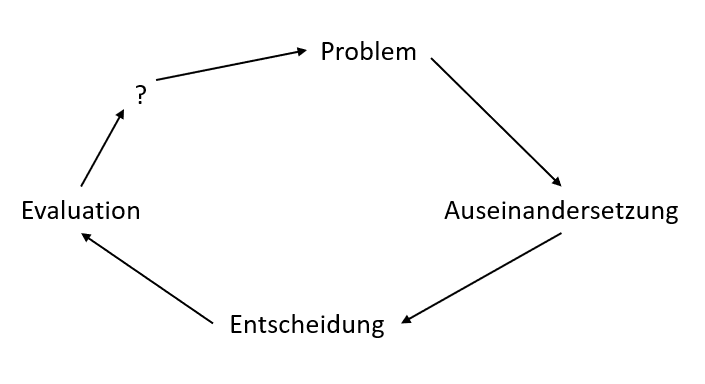

... > Sozialstruktur und Sozialstaatlichkeit im Wandel > C - Ausgestaltung des Sozialstaats
C - Ausgestaltung des Sozialstaats
1. Sozialstaat oder Wohlfahrtsstaat?
Rechtsgrundlagen
- Art. 20 Abs. 1 GG: Die BRD ist ein demokratischer und sozialer Bundesstaat
-> Sozialstaatsgebot als Staats-und Organisationsprinzip auch in den Ländern (Art. 28 Abs. 1 GG)
- Art. 1 Abs. 1 GG: Schutz der Menschenwürde ist die Verpflichtung aller Staatlichen Gewalt
-> Anspruch jedes Bewohners in Deutschland gegenüber dem Staat auf Versorgung bei Bedürftigkeit
- Offenheit des Sozialstaatsprinzips
-> Gestaltung durch die demokratischen Mehrheiten
- BVG: Garantie des Existenzminimums durch den Staat
Historischer Rückblick
- Industrielle Revolution erzeugt die Soziale Frage
-> Sozialgesetzgebung durch Bismarck:
1883 - Krankenversicherung
1884 - Unfallversicherung
1889 - Alters- und Invalidenversicherung
-
Weiterentwicklung und Ausweitung:
1912 - Sozialversicherung für Angestellte
1919 - Schwerbeschädigtenschutz
1927 - Arbeitslosenversicherung
Prinzipien
- Existenzsicherung
- Sozialer Ausgleich
- Soziale Gerechtigkeit
Exkurs Aristoteles (angelehnt):
3 Formen der Gerechtigkeit:
- Unterstützung der "Schwachen"
- Förderung der "Tüchtigen"
- Schaffung von allgemeiner Gleichheit
Maßnahmen
- Existenzsicherung:
Alter, Krankheit, Unfall, Pflegebedürftigkeit, Arbeitslosigkeit, Arbeitsmarktpolitik (Kurzarbeitergeld,
Fortbildung bzw. Umschulung von Arbeitslosen, Arbeitsbeschaffungsmaßnahmen(ABM))
- Sozialer Ausgleich:
Kindergeld, Kinderfreibeträge, Erziehungsgeld, Mutterschutz, Wohngeld, Sozialhilfe, Steuerpolitik
- Soziale Gerechtigkeit:
Bildungspolitik (BAföG), Wohnungsbaupolitik (sozialer Wohnungsbau, Wohnungsbauprämien)
Abgrenzung
Wohlfahrtsstaaten überdehnen sozialstaatliche Funktionen.
Kennzeichen
| Sozialstaat |
Wohlfahrtsstaat |
| Sicherung des Existenzminimums |
Überdehnung des Solidaritätsprinzips bei Aufgabe des Subsidiaritätsprinzips |
| Ziel: Rechtliche Gleichheit |
Verbreitung von Anspruchs- und Besitzstandsdenken |
| Soziale Sicherheit gegenüber Unfall, Krankheit, Arbeitslosigkeit... |
Schwächung der Selbstverantwortung und des Leistungsprinzips |
| Vermehrung und gerecht verteilter Wohlstand |
Gefährdung der internationalen Wettbewerbsfähigkeit durch hohe Steuern, Abgaben und Subventionen |
Drei Säulen
| Leistungen nach dem... |
Versicherungsprinzip |
Versorgungsprinzip |
Fürsorgeprinzip |
| Durch die... |
Sozialversicherung |
Öffentliche Versogrung |
Grundsicherung, Sozialhilfe |
| Erhalten... |
Mitglieder der Sozialversicherung, wenn sie Versicherungsbeiträge gezahlt haben. |
Bestimmte Bevölkerungsgruppen, wenn sie besodere Opfer oder Leistungen für die Gemeinschaft erbracht haben. |
Alle BürgerInnen, wenn sie bedürftig sind. |
| Finanziert durch... |
Versicherungsbeiträge und Staatszuschüsse |
Steuermittel |
Steuermittel |
| Beispiele |
Renten-, Kranken-, Arbeitslosen-, Pflege- und Unfallversicherung |
Kindergeld, Beamtenbezüge, Kriegsopferversorgung |
Sozialhilfe, Hartz IV, Wohngeld |
| Prinzipien |
Solidaritätsprinzip, Aquivalenzprinzip |
Solidaritätsprinzip |
Solidaritätsprinzip, Subsidiaritätsprinzip |
2. Das System der Sozialen Sicherung
Gesetzliche Sozialversicherung
Das gesetzliche Sozialversicherungssystem funktioniert nach dem Solidar- und Paritätsprinzip:
alle Versicherten zahlen den gleichen Prozentsatz ihres Bruttoeinkommens
und die Beträge sind zwichen Arbeitgeber und Artbeitnehmen gleich aufgeteilt.
Die Außnahme bildet hierbei die Unfallversicherung, welche vollständig vom Arbeitgeber getragen wird.
Die 5 Säulen des Sozialversicherungssystems:
- Krankenversicherung
- Arbeitslosenversicherung
- Unfallversicherung
- Rentenversicherung
- Pflegeversicherung
Dimension und Reichweite der sozialen Gerechtigkeit
- Unparteilichkeit:
Keine systematischen Bevorzugungen oder Benachteiligungen einzelner Gruppen
- Gleichheitsgrundsatz:
Bestehende Verteilungsregeln werden für alle gleich angewandt
- Legitimität:
Als legitim angesehene Anrechte kann der Einzelne geltend machen
- Reichweite in den 60/70er Jahren:
(Um-)Verteilung von Einkommen und Vermögen
- Reichweite heute:
Gerechte Verteilung von Chancen (Möglichkeiten seine eigenen Lebenspläne zu verwirklichen)
Norbert Blüm: "Eins ist sicher: Die Rente"
Bewerte diese Aussage

- Problem:
Aussage suggeriert Sicherheit, doch das Rentenkonzept bedeutet signifikante Einkommenseinbußen, bzw. Altersarmut
- Auseinandersetzung:
- allgemeine Rentenversicherung (inkl. Beamte etc.)
- völlige Umstellung des Systems ↯
- Auswandern
- Einwanderung
- Wachstumspolitik
- Erweiterung der Rentenversicherung (z.B. Riesterrente)
- Entscheidung:
- staatliche Erweiterung: Grundrente
- private Erweiterung: Riesterrente/Betriebsrente
- Evaluation:
- Riesterrente: Nutznießer Mittelstandsfamilien
- Grundrente: Profiteure Unterschicht
- Wachstumspolitik ist ressourcenintensiv
- ?:
- soziale Gerechtigkeit
- Nachhaltigkeit
- (materialistische) Werte
GRV, GPV & Agenda 2010
3. Probleme des Sozialstaats
Herausforderungen
- Jeder Dritte € geht in den Sozialstaat.
Tendenz steigend (Vergleich 1960: Jeder Fünfte €)
- Demographischer Wandel (Weniger Arbeitskräfte, mehr Rentner und Pflegebedürftige)
- Immigration
Beispiel Arbeitslosigkeit
-
Familie:
- Vater: Nettoeinkommen(NE) 2400 €
- Mutter: Hausfrau
- Kinder: 5, 10 und 14 Jahre alt
- Warmmiete: 680 €
- Kindergeld(KG): 558 € (Stand 2013)
| Lohneinkommen |
ALG I |
ALG II |
NE: 2400 €
KG: 558 € |
ALG I: 1608 € (67% NE)
KG: 558 € |
ALG II (♂): 382 €
Sozialgeld (♀): 345 €
Sozialgeld (14): 289 €
Sozialgeld (10): 255 €
Sozialgeld (5): 224 € |
| Miete: -680 € |
Miete: - 680 € |
|
| VE: 2278 € |
VE: 1486 € |
VE: 1495 € |
VE ≙ Verfügbares Einkommen
Gleichstellung der Geschlechter
Rechtsrahmen:
Art. 3 Abs. 2 GG
Bestandsaufnahme:
siehe Statistikmaterial
Ursachen
- geschlechtsspezifischer Sozialisierungsprozess
- patriarchale Strukturen der Arbeitswelt
- geschlechtsspezifische Arbeitsleistung in der Familie
4. Euröpäische Sozialstaatsmodelle
| Modell |
Skandinavisch |
Kontinental |
Liberal |
Mediterran |
| Beispiele |
S, FIN, N, DK (NL) |
D, A, B, I |
GB, IRL |
E, P, GR |
| Merkmale |
- Erwerbstätigkeit beider Geschlechter
- bereits öffentl. DLA
- Recht auf Arbeit
|
- Erwerbszentriert
- Beitragsfinanziert
- Sicherung des erworbenen souialen Status im Alter
|
- Steuerfinanziert
- Armutsbekämpfung
- Niedrige soziale Standards
|
- Sozialversicherung
- Bedeutsame Gewerkschaften
- Niedrige Erwerbstätigkeit von Frauen
|
| Rolle des Staats |
Hoher Staatsanteil |
Anbieter von Transferleistungen |
Angebot eines selektiven WFS |
geringes soziales Engagement |
| Grad des sozialen Ausgleichs |
|
- mittel
- Lohndifferenzierung
|
gering |
gering |